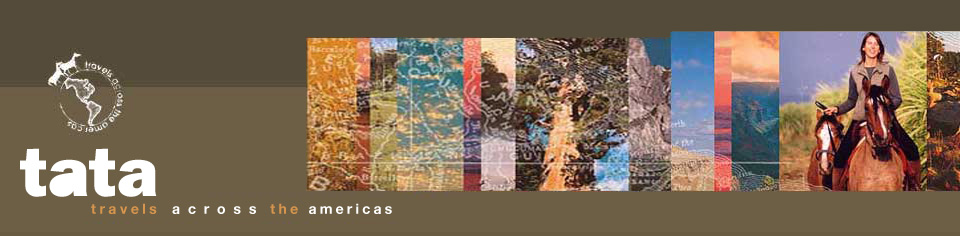

 Bolivia, Tarija : 17th September 2002
Bolivia, Tarija : 17th September 2002
We all had butterflies crossing into a new country but there was a feeling of great excitement as well between the three of us. Miss M knew that once we cross that border we will be on our own completely so it was a combination of mixed feelings when we said goodbye to Eduardo LaRey from the Argentine Gendarmeria and started our next stretch downhill into Bolivia.
 This was the first day of our journey that we didn't know where we will sleep that night and in a way it added to the atmosphere of adventure… a kind of braving the unknown.
This was the first day of our journey that we didn't know where we will sleep that night and in a way it added to the atmosphere of adventure… a kind of braving the unknown.
The scenery was beautiful and for most of the day we were riding with the mountains on either side of us, passing little houses where curious men, woman and children looked at us in astonishment. They were all very friendly though and we got a lot of enthusiastic waves and questions. It was an overcast day and ideal for traveling and even though we had to go on the tar-road for most of the time (no place on the side of the road) we were not overly exhausted when we arrived at a small settlement later that afternoon. It consisted of a house and "lapa" in front, which the people living there turned into a little dining place for passersby. It was the ideal place to stop as there was a lot of green grass in the front for us to munch on and the young lad helped Miss M to get settled and to pitch her tent (the first time since we started!). We weren't tied up and Miss M was so sure that we wouldn't go anywhere but she didn't notice the sugar cane fields behind the house and it was not long before we made our way over there… well actually Tusa initiated this…. So the next moment when she looked up from her plate of food we were gone! It was great excitement for all the kids though and they all came running through the fields trying to find us. Tusa gave our location away in the form of leaving a little "message" (I think you catch my drift!) as we were heading deeper into the fields and it was not long before we were brought back to our original spot again.
The next few days were uphill and downhill a lot but it was so scenic around us that we didn't mind it too much. Miss M got off every time there was a long and steep downhill and walked with us. We appreciated the gesture and we imagine it is good for her as well, giving the legs a bit of a stretch.
 Our second stop was at a tiny village, which consisted only of about 4 houses, a church and a school. Fortunately there was a river nearby where Miss M could wash the off the sweat from our backs, let us have some drinking water and get to rinse herself. We arrived at LaMamora on the third night and were taken to the house of the local priest who turned out to be Australian. Miss M was delighted to get the opportunity to speak English again and also to be able to sleep in a house and not the tent. We were quite high up in the mountains and it can get really chilly after the sun had set. There wasn't any grass or alfalfa for us to eat here so Miss M bought a big bag of maize that had to see us through. It gave us some energy but we left the following morning still hungry and we couldn't wait to get to a patch of grass again. We didn't do too big a distance that day as Miss M knew we hadn't had much to eat and by midday we stopped at a very cosy and picturesque village called La Merced. A very small community lives here and everybody contributes to the general maintenance of the village, school and
Our second stop was at a tiny village, which consisted only of about 4 houses, a church and a school. Fortunately there was a river nearby where Miss M could wash the off the sweat from our backs, let us have some drinking water and get to rinse herself. We arrived at LaMamora on the third night and were taken to the house of the local priest who turned out to be Australian. Miss M was delighted to get the opportunity to speak English again and also to be able to sleep in a house and not the tent. We were quite high up in the mountains and it can get really chilly after the sun had set. There wasn't any grass or alfalfa for us to eat here so Miss M bought a big bag of maize that had to see us through. It gave us some energy but we left the following morning still hungry and we couldn't wait to get to a patch of grass again. We didn't do too big a distance that day as Miss M knew we hadn't had much to eat and by midday we stopped at a very cosy and picturesque village called La Merced. A very small community lives here and everybody contributes to the general maintenance of the village, school and  church. Mateo who lives there with his wife and three kids seems to be "running the show" and he offered Miss M a room in his house. The lads cut some sugar cane leafs for us and we also were fed small bits of maize. We caused a bit of a stir though when I followed Tusa to investigate the main road (he got a cut on his fore-leg in the process and we were covered in black thorns marching through some bushes) and Miss M wasn't impressed at all when she finally caught up with us. She spent the next hour trying to get the thorns off (the machete great for this although we were both holding our breaths…) and afterwards we were the proud owners of very lush coats again. Augustine is another man who lives in La Merced and he helped Miss M to give our shoes a "service" (she planned on getting us new ones in Tarija) and he also secured the straps that she use to tie up the pack. We nearly had a nasty accident the previous day when part of the strap broke and Tusa went wild. Everything went lopsided under his belly and he kicked and jumped as if his life depended on it. Poor thing…must have given him an awful fright. I got a bit of a scare as well because I didn't realize straight-up what had been happening and the next moment I just felt the leading rope tighten and saw from the corner of my eye, Tusa charging past us, kicking and bolting. He calmed down eventually and Miss M got off me to rescue him and the pack (well most of the pack was strewn all over the road at this stage). Fortunately Miss M could work out a plan for tying up our things until our next stop and apart from a torn saddle-bag and a gash on Tusa's back leg (wasn't his day), we all survived the incident.
church. Mateo who lives there with his wife and three kids seems to be "running the show" and he offered Miss M a room in his house. The lads cut some sugar cane leafs for us and we also were fed small bits of maize. We caused a bit of a stir though when I followed Tusa to investigate the main road (he got a cut on his fore-leg in the process and we were covered in black thorns marching through some bushes) and Miss M wasn't impressed at all when she finally caught up with us. She spent the next hour trying to get the thorns off (the machete great for this although we were both holding our breaths…) and afterwards we were the proud owners of very lush coats again. Augustine is another man who lives in La Merced and he helped Miss M to give our shoes a "service" (she planned on getting us new ones in Tarija) and he also secured the straps that she use to tie up the pack. We nearly had a nasty accident the previous day when part of the strap broke and Tusa went wild. Everything went lopsided under his belly and he kicked and jumped as if his life depended on it. Poor thing…must have given him an awful fright. I got a bit of a scare as well because I didn't realize straight-up what had been happening and the next moment I just felt the leading rope tighten and saw from the corner of my eye, Tusa charging past us, kicking and bolting. He calmed down eventually and Miss M got off me to rescue him and the pack (well most of the pack was strewn all over the road at this stage). Fortunately Miss M could work out a plan for tying up our things until our next stop and apart from a torn saddle-bag and a gash on Tusa's back leg (wasn't his day), we all survived the incident.
At one stage, going through the mountains we encountered an awful lot of trucks and men working on the roads. Some of the machines that they were using were awfully big and made a lot of noise and Miss M was really proud of how we handled this and that we didn't get very scared. We all got annoyed at the dust in our faces though and as Miss M chose to close her eyes for a few seconds every time a big truck passed us, I thought it sensible not to do the same….you couldn't help but notice how far the river was below us and a miss-step could easily have seen us all plunging down to eternity!
The road to Padcaya was absolutely amazing and we had to stop a few times to take in all the beauty that surrounded us. The vegetation was quite dry in this part but the different shades of brown had an appeal of its own as it covered the valleys and mountains for as far as we could see. We spotted a few people living in these mountains in little mud-houses, leading very simplistic lives with no luxuries, far away from the trappings that modern life can bring….
We all tried to get an early night in Padcaya as Miss M planned to do the next day in one go - 50km to Tarija - a town where we had a "contact" and where we had decided to stay for a few days of rest.
The gods were looking down on us the following day, because it had rained during the night, turning the day into a cool overcast one, which makes a long distance ride a lot easier (well, to be truthful…the legs still get very tired but there is probably less sweat and exhaustion). It even started to rain again about 7km into our days journey but by the time Miss M had managed to get her rain poncho on, it had stopped again!
The tiredness sat heavily in our bones by the time we reached Tarija. Miss M stopped at a little shop with a house at the back on the side of the road to ask for water and the people laughed at Tusa and I fighting over the bucket. Just before we entered the city, we were met by our "contact" - a very friendly man called Jorge Blacud (we know his family, the Trigo's in BA, Argentina) and we followed him to where he had arranged for Tusa and I to be kept for the duration of our stay. We arrived at the army base and was met by Colonel Lopez who arranged for a young lad to take Miss M and us cross country through the army camp and pass a river to Club Hipico, which was going to be our home for the duration of our stay in Tarija.
 As I am dictating this diary update, we are still in Tarija as Miss M had decided to stay a few days longer to give us the opportunity to gain a bit more body-weight before we head on again (fingers crossed she doesn't decide that she needs to do the same for herself…!). A vet came out two days after our arrival to give us a check-up and we got the all clear. In fact he was surprised that we were in such good shape after having done so many miles. He also confirmed Miss M's suspicions that I was indeed in "that time of the month" again, so Miss M now understands slightly better why Tusa recently got the odd side-kick (no biting!) from me and why I run like a mad-woman down to the other horses when she lets us out of the paddock in the mornings!!
As I am dictating this diary update, we are still in Tarija as Miss M had decided to stay a few days longer to give us the opportunity to gain a bit more body-weight before we head on again (fingers crossed she doesn't decide that she needs to do the same for herself…!). A vet came out two days after our arrival to give us a check-up and we got the all clear. In fact he was surprised that we were in such good shape after having done so many miles. He also confirmed Miss M's suspicions that I was indeed in "that time of the month" again, so Miss M now understands slightly better why Tusa recently got the odd side-kick (no biting!) from me and why I run like a mad-woman down to the other horses when she lets us out of the paddock in the mornings!!
Our next stretch is going to be difficult and challenging and apart from having to go up to really high altitudes and the problems one can encounter with these heights, we will also have to cope with bone-chilling colds at night on the Altiplano. We hope to reach Potosi (the world´s highest city at 3876m above sea level) in about two weeks.